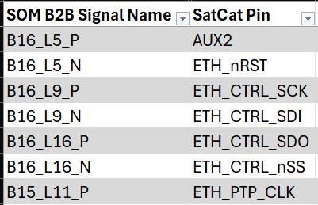
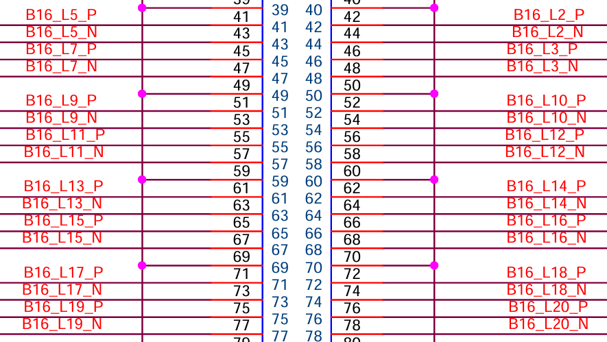
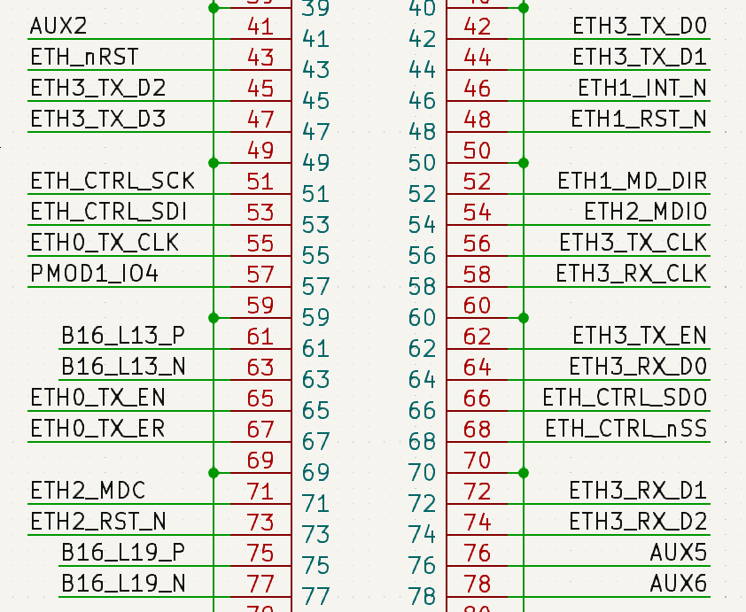

SatCat Custom Carrier Board Design
This document shows the progress of development of the carrier board for SatCat5. The base of the design is based on Aerospace Corp's SatCat5 open source ethernet switcher. Their GitHub includes a prototype design featuring the AC701 Evaluation Board for the Artix 7 FPGA chip. For the purposes of SCALES, an evaluation board like that is not something we would want in our design, so we are using an SOM of the Artix 7 instead.
The idea is to take the important signals from SatCat's prototype using the AC701 and modify it to work with the SOM we would use in SCALES. This presents a problem for us, since the AC701 uses a different version of the Artix 7 than the SOM, so the signals don't match up to the same pins on the Artix 7 chip.
We have currently decided to pause development on SatCat for SCALES, as much of the open source design available through Aerospace Corp's GitHub lacks enough detail for s to fully move forward. We have experienced too many barriers in this design to justify the amount of work needed to verify the design.
Mapping the Signals
The AC701 Evaulation Board used in the SatCat prototype uses the xc7a200tfbg676 version of the Artix 7 200t FPGA. The SOM that will be used in SCALES uses the xc7a200tfbg484 version of the Artix 7 200t FPGA.
Resources:
- SatCat prototype PCB design
- AMD Artix 7 FPGA AC701 Evaluation Kit used on SatCat
- AC7200 FPGA SOM used on SCALES
- Pin definitions for the FGB676 on the AC701
- Pin definitions for the FBG484 on the SOM
- AMD 7 Series FPGA Packaging and Pinout
Steps:
- Look at the SatCat proto PCB schematic. The FPC connector on page 1 is what connects their proto PCB to the AC701 evaluation board. In a spreadsheet, copy the names of each signal bank letter and pin number used in the FMC connector for SatCat.
-
Find the datasheet/user's guide for the AC701 evaluation board. Navigate to the "FPGA Mezzanine Card Interface" on page 58. There is a table in this section listing the schematic net names for the FMC connector. The first column is the bank letter and pin number (ex. C10) of the FPC connector and the last column is the corresponding pin on the FPGA chip (ex. G19) of the AC701 eval board. Add these to the sheet for each SatCat signal.

FMC pin definitions

SatCat FMC pin signals
-
Take the Pin definitions for the FGB676 on the AC701 and add them to the spreadsheet in a different tab. Do the same for the Pin definitions for the FBG484 on the SOM. It may also help to combine these lists in their own tab to make cross-referencing easier. The spreadsheet used in SCALES is organized as follows:
- signals - main sheet to show and compare the signals between the AC701 eval board and the SCALES SOM
- chips - shows the pin definitions for each chip variation to cross-reference in the signals sheet.
- xc7a200tfbg484pkg - pin definitions of the SOM chip pulled from the txt file. for reference only.
- xc7a200tfbg676pkg - pin definition of the eval board chip pulled from the txt file. for reference only.
-
In the chips tab of the sheet, ctrl+f for the FMC pin name (ex. G19) and find the corresponding signal name for the FBG676 chip used on SatCat. Make sure to select “Match entire cell contents” and that you are searching the Value, not the Formulas in the Find and Replace options. Copy the signal name to the main sheet and repeat for all signals on the FMC.

Find and Replace example

Signal Matching example
-
Now, the same signal on the other chip will not match up to the same pin, so we have to ctrl+f for the signal name of each FMC/SatCat signal in the chips tab of the sheet in the SOM FBG484 column, then copy the pin and signal name name over to the signals sheet.
- Disclaimer: the 484 chip does not have a bank 12, but the 676 does. For our purposes, I am replacing the signals used on bank 12 of the 676 FMC chip with the equivalent signals on bank 13 of the 484 SOM chip. I do not currently see an issue with this, but it is something to keep in mind if issues arise later.

Find and replace for SOM
-
Once that is done, open the SOM schematic (found in the "Documentations" section). Here you will see each bank of the SOM with the FPGA signal name, FPGA pin name, and the SOM signal name listed for each output. Ctrl+F for each FPGA pin on the SOM and copy down the matching SOM output signal name into the spreadsheet. These SOM output signals will be what the board-to-board (B2B) connector uses to communicate with the SCALES custom carrier board.

Resulting spreadsheet with the SOM signals on the right
Starting the Schematic
-
Download the KiCad library files for the Board to Board Connector on Mouser. Start a new project in KiCad and place four connectors down.
-
The SOM schematic (found in the "Documentations" section) page 12 shows the Board to Board (B2B) connectors on the SOM that we will be using. Using that schematic as a reference, match the signals on the connectors to the ones listed in the spreadsheet. Replace the SOM signal name on the schematic with the equivalent SatCat signal name.

Section from the spreadsheet

SOM B2B original schematic section

SCALES SOM B2B modification (same section)
Design Considerations
We are going to be trying to imitate what Aerospace Corp did with SatCat on Slingshot which was:
- 4x Gigabit ethernet SGMII
- up to 16 SPI/UART depending on scale of the Handle bus
Still working on what comes next. To be continued...